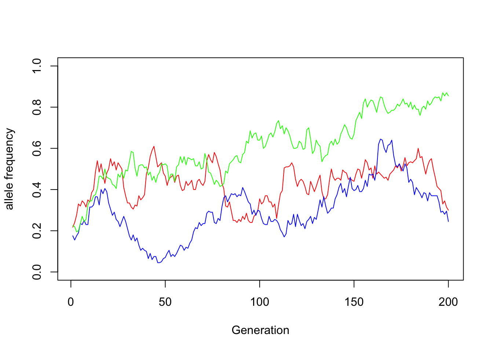

Wright Fisher models of how rare variants became common in our college squirrels.
Referencing this guide: https://stephens999.github.io/fiveMinuteStats/wright_fisher_model.html
\(N\) — Effective population size. We will assume it is constant for all generations.
\(\mu\) — Mutation rate—probability of an individual passing on a mutation at any single site to one of its offspring. We will set \(\mu=0\) for this simulation.
\(p_0\) — allele frequencies of minor allele \(a\) in our pre-college meta-population. We’ll assume all sites are bialleleic and that the major allele \(A\)’s frequency is \(1-p_0\).
\(p_1\) — Starting vector of allele frequencies in one college population.
\(g\) — Total number of generations in our simulation.
\(X\) — Our \(m*g\) matrix of allele counts measured from generation \(1\) to \(g\) at one college campus. Rows correspond to our \(m\) different alleles, columns to our \(g\) different generations \(X_{ij}\) is the frequency of allele \(i\) in generation \(j\).
The crux of the W-F process will be updating each allele frequency in each generation, taking into account population size. This is simply sampling \(2N\) times from a binomial distribution with size \(2N\) (because each individual has 2 alleles) and probability \(p_{j}\) then calculating the new allele frequency \(p_{j+1}\). Here’s the function to do that:
updateFreq <- function(.N, .p) {
new_alleles <- rbinom(n = length(.p), size = 2*.N, prob = .p) # new count of allele a
new_alleles/(2*.N) # new frequencies
}This works for both single loci:
N <- 100 # 100 individuals
p_j <- 0.7 # 70% of alleles at this site are a in this population
updateFreq(.N = N, .p = p_j)## [1] 0.73And several loci, given as a vector of their frequencies
p_j <- c(0.7, 0.1, 0.99)
updateFreq(.N = N, .p = p_j)## [1] 0.685 0.105 0.990Now we can create a loop that produces these allele frequencies iteratively until we reach our final generation.
wrightFisher <- function(.N, .p, .X = NULL, .g = 500, .g_now = 1) {
# Add previous generation's allele frequencies to X
.X_new <- cbind(.X, .p, deparse.level = 0)
# check if we're at the final generation
if (.g_now == .g) {
return(.X_new)
}
# if not, update allele freqs for the next generation
.p_new <- updateFreq(.N = .N, .p = .p)
# recursively call the function within itself to create a nested loop
return(wrightFisher(.N = .N, .p = .p_new, .X = .X_new,
.g = .g, .g_now = .g_now + 1))
}Here’s what the output looks like:
wrightFisher(.N = 100, .p = c(0.7, 0.1, 0.99), .g = 10)## [,1] [,2] [,3] [,4] [,5] [,6] [,7] [,8] [,9] [,10]
## [1,] 0.70 0.73 0.700 0.705 0.685 0.74 0.725 0.725 0.730 0.670
## [2,] 0.10 0.14 0.155 0.145 0.185 0.25 0.280 0.285 0.295 0.340
## [3,] 0.99 0.99 0.990 0.970 0.960 0.98 0.980 0.985 0.975 0.995The last thing we need before running the full simulation is our starting allele frequencies for our college squirrels. We’re assuming that we are following a set of rare variants that were all present at low frequency (\(\leq 0.25\)) in our meta-population. By chance, some of these variants may become more common when our population initially bottlenecks onto the different college campuses, as we will see when we run the simulation.
m <- 10 # 10 alleles
runif(n = m, min = 0, max = 0.25) # their rare frequencies in the meta-population## [1] 0.05748024 0.07985892 0.03865539 0.15279361 0.17592577 0.02991744 0.10404113
## [8] 0.24246303 0.09652441 0.20635422Now it’s time to officially run the simulation
N <- 100
g <- 200
m <- 50
p_0 <- runif(n = m, min = 0, max = 0.25)
X <- wrightFisher(.N = N, .p = p_0, .g = g)
nonzero_alleles <- which(X[,g] > 0) |> sample(size = 3, replace = FALSE)
plot(x = 1:g, y = X[nonzero_alleles[1], ], type = "l", col = "red",
xlab = "Generation", ylab = "allele frequency", ylim = c(0, 1))
lines(x = 1:g, y = X[nonzero_alleles[2], ], type = "l", col = "blue")
lines(x = 1:g, y = X[nonzero_alleles[3], ], type = "l", col = "green")
In this manner, certain alleles in each college population will rise to new heights (aka frequencies). For no reason other than the smaller population size.